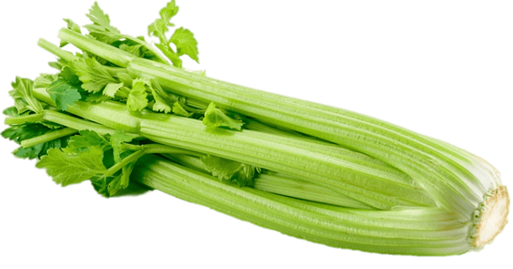
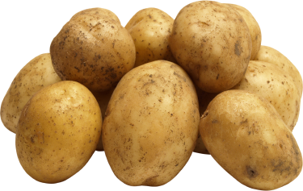

<ion-header>
  <ion-toolbar>
    <ion-title>
    
    </ion-title>

  </ion-toolbar>
</ion-header>

<ion-content>
  <h1 class="">Vegetable Categories</h1>
  <ion-card class="firstclass" routerLink="/carrot">
        <ion-card-content>
            
            <div class="card-title">Carrot</div>
        </ion-card-content>
  </ion-card>

  <ion-card routerLink="/celery">
    <ion-card-content>
      
      <div class="card-title">Celery</div>
    </ion-card-content>
  </ion-card>

  <ion-card routerLink="/tomato">
    <ion-card-content>
      
      <div class="card-title t">Tomato</div>
    </ion-card-content>
  </ion-card>

  <ion-card routerLink="/potato">
    <ion-card-content>
      
      <div class="card-title">Potato</div>
    </ion-card-content>   
  </ion-card>
</ion-content>